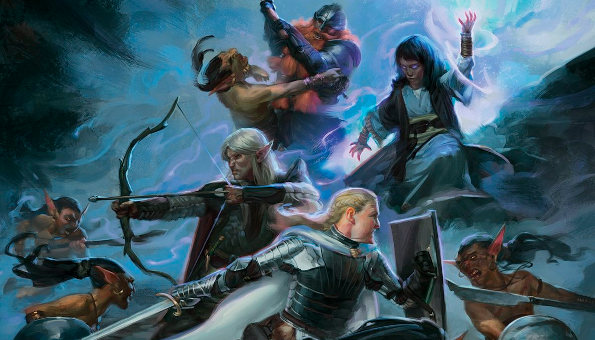
- Todos esses arquétipos... sabe, nós somos todos eles,
e você precisa aprender a honrá-los
e reconhecê-los dentro de si.
- Além disso, você pode ser pessoas que não é.
- Hum. Verdade. E pessoas que você é.
Devin Greyson em Users, livro 3
Seu personagem é quem você quiser e como você quiser, mas pensar em alguns pontos base podem te ajudar a criar alguém interessante e divertido. Um meio de atingir isso é usando arquétipos.
Um arquétipo gera valores, habilidades e comportamentos diferentes para o personagem de RPG que você está construindo.
Mas o que é isso?Um arquétipo é uma forma conhecida e aprovada de representar algo, ou seja, é o padrão de características que define algo que já conhecemos. Por exemplo, o arquétipo do nerd gira em torno de uma pessoa com um conhecimento profundo por temáticas não muito populares, uma aptidão para os estudos e um certo desajuste social provocado pela peculiaridade de seus interesses.
Usar um arquétipo pode trazer benefícios como: apresenta de forma simples sua identidade; entrega um conjunto de habilidades e aptidões; e torna seu personagem consistente durante todo o jogo.
Um arquétipo não é um limitador. Mais abaixo vamos citar Katniss, por exemplo, como o arquétipo de Líder, mas ela também pode ser uma Rebelde. As pessoas não são simples, seus personagens também não deveriam ser.
Em seguida você verá alguns exemplos, mas não se sinta preso a eles. A sua imaginação é o limite.
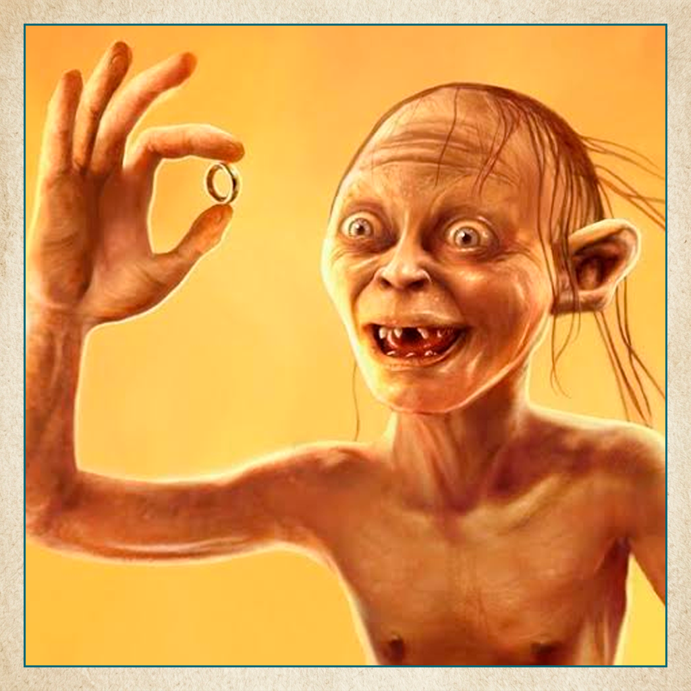
ApaixonadoTem gente que faz tudo por amor. Sob o olhar dos outros, as declarações e confissões do personagem Apaixonado podem parecer exageradas e até cômicas, mas a verdade é que sua paixão arde tão forte que sua existência não pode suportar mais um dia longe da coisa amada.
A devoção do Apaixonado pode ser comparada com a obsessão do Líder e a energia caótica do Rebelde. O lado negativo deste arquétipo é que nem sempre seu amor é correspondido, podendo vir a sofrer uma terrível perda ou um trágico sacrifício por alguém que não correspondia aos seus sentimentos, por exemplo.
O que o Apaixonado mais quer na sua vida é se reunir com seu objeto de amor, e para chegar até lá, deixará a própria identidade para trás e jogará aos quatro ventos o que restou da sua liberdade.
Inspiração:Gollum, de O Senhor dos Anéis, é um bom exemplo de Apaixonado. Ele foi corrompido e corroído por seu amor pelo Um Anel.
Outros:
- Westley (A Princesa Prometida);
- Anakin Skywalker (Star Wars);
- Romeu Montecchio (Romeu e Julieta);
- Carl Fredricksen (Up - Altas Aventuras);
- Gomez Addams (A Família Addams \ Wandinha).
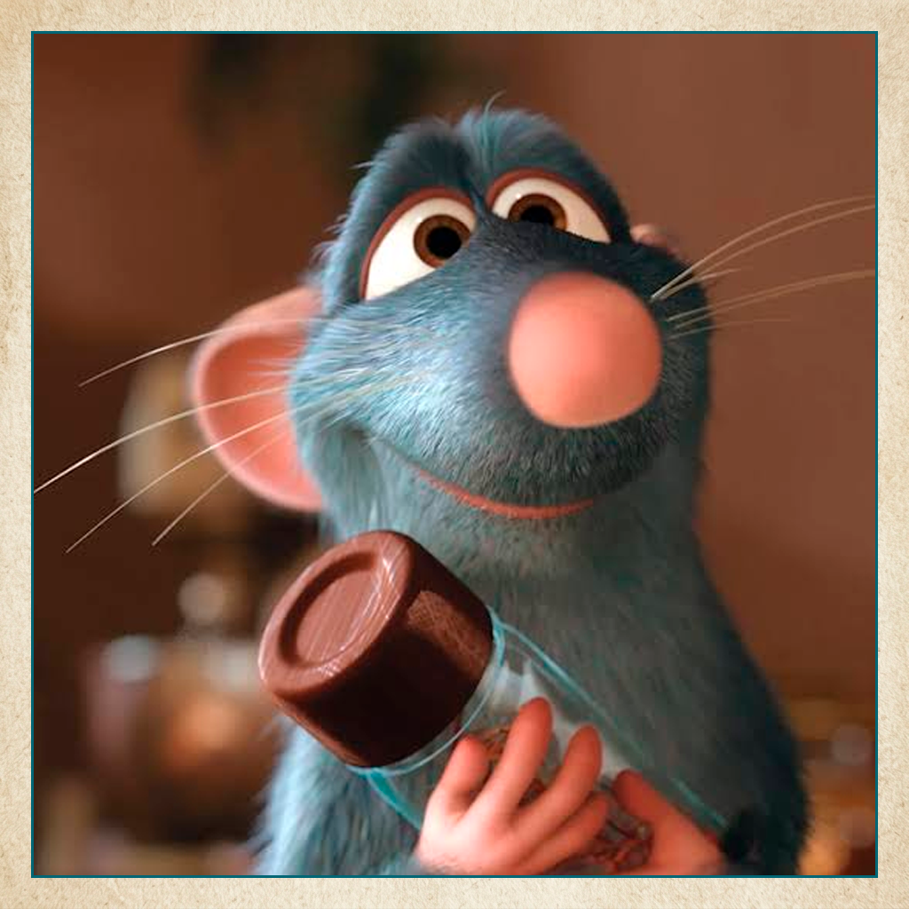
ArtistaO Artista enxerga o mundo através de emoções, beleza e experiências pessoais. Para ele, nem tudo precisa ter uma função, uma explicação ou uma utilidade. Algumas coisas simplesmente têm valor porque fazem alguém sentir alguma coisa.
Ele percebe detalhes que os outros costumam ignorar: uma música tocando ao longe, uma lembrança associada a determinado lugar, o sentir com que alguém olha para outra pessoa. Muitas vezes, possui uma relação intensa com aquilo que cria ou aprecia, usando arte, humor, música, histórias ou qualquer outra forma de expressão para transformar coisas difíceis de explicar em algo que possa ser compartilhado.
Essa sensibilidade também pode ser sua maior vulnerabilidade. O ego pode ser um grande problema... Ele pode levar críticas para o lado pessoal, se deixar dominar pelas próprias emoções ou ter dificuldade em abandonar algo que considera belo ou significativo. Em um ambiente que valoriza eficiência, força e pragmatismo, pode sentir que sua maneira de enxergar o mundo não tenha espaço.
O Artista não precisa ser frágil, sentimental ou particularmente talentoso. Sua característica fundamental é dar importância àquilo que não pode ser facilmente medido. Enquanto outros perguntam "isso funciona?", ele pode perguntar "isso significa alguma coisa?".
Às vezes, sua capacidade de sentir profundamente é justamente o que permite compreender pessoas, inspirar outras ou enxergar possibilidades que uma visão puramente racional não perceberia.
Inspiração:Remy, de Ratatouille. Remy possui uma sensibilidade incomum para sabores e aromas. Enquanto os outros ratos pensam em comida principalmente como algo para comer, Remy percebe combinações, nuances e possibilidades. Não consegue aceitar que sua condição determine aquilo que pode criar. Para ele, cozinhar é expressão e paixão, não apenas alimentação.
Outros:
- Luna Lovegood (Harry Potter);
- Rapunzel (Enrolados);
- Chihiro (A Viagem de Chihiro);
- Walter Mitty (A Vida Secreta de Walter Mitty);
- O Pequeno Príncipe.
Este arquétipo se caracteriza por priorizar as vontades e necessidades dos outros.
São personagens que colocam a saúde de seus aliados acima de suas próprias vidas e se apresentam com absoluta lealdade às pessoas que amam. O Cuidador é um personagem de suporte. Quando o próprio líder pensa em desistir, é ele que reacende a chama da esperança e traz todos de volta ao jogo.
Ainda assim, todo arquétipo apresenta defeitos ou fraquezas, e isso não é diferente para o Cuidador, que apesar de um grande coração, tende a ser vulnerável emocionalmente, permitindo que os outros tirem proveito dele sem oferecer muita resistência.
Inspiração:Steve Harrington, de Stranger Things, é um bom exemplo de Cuidador. Começa como um personagem mais egoísta, mas se transforma em alguém extremamente protetor, que frequentemente assume o papel de "babá" do grupo, colocando-se fisicamente em perigo para proteger os amigos.
Outros:
- Alfred Pennyworth (Batman);
- Samwise Gamgee (O Senhor dos Anéis);
- Steve Rogers, o Capitão América;
- Sakura Haruno (Naruto);
- Hagrid (Harry Potter).
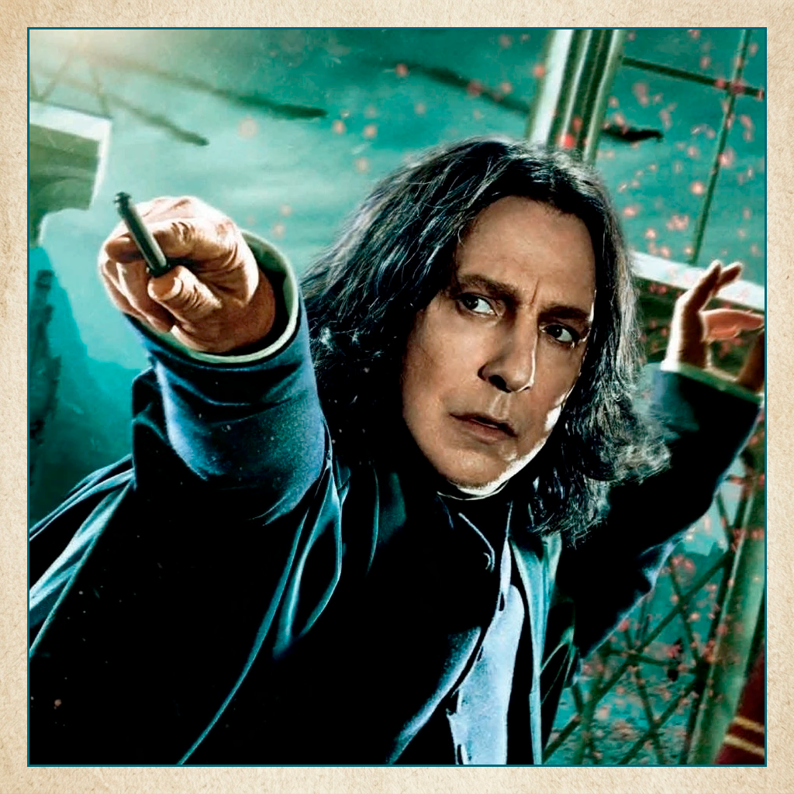
ExiladoO Exilado tem seus motivos para se manter emocionalmente distante do grupo, de forma a sempre apresentar uma aparência melancólica, introspectiva e solitária.
Por mais que seja de poucas palavras, esse personagem de RPG possui uma devoção imensa a algo ou alguém, e no âmago de seu coração sua lealdade sempre será imaculada. Essa profundidade emocional transborda por meio de ações que, aos olhos alheios, podem parecer divagações, como uma canção sussurrada à noite, ou um diário mantido em segredo.
No mais, o exilado quer ser inspirado, por isso faz bom par com o Líder e o Tolo para sair de seu estado letárgico e voltar à ação.
Inspiração:Severus Snape, de Harry Potter, é um bom exemplo de Exilado. É isolado, amargurado e emocionalmente fechado, mas sua vida é marcada por uma devoção extremamente profunda e secreta. Boa parte de suas ações só ganha significado quando entendemos aquilo a que ele permaneceu leal.
Outros:
- Aragorn (O Senhor dos Anéis);
- Bruce Wayne, o Batman;
- Logan, o Wolverine;
- Din Djarin (O Mandaloriano);
- Elsa (Frozen).
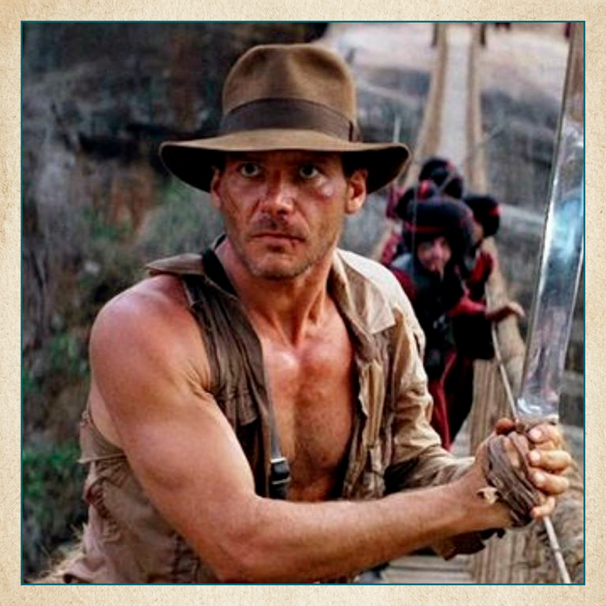
ExploradorO Explorador é o personagem que nunca está completamente satisfeito com aquilo que já conhece. Para ele, existe sempre um lugar além da próxima montanha, uma passagem escondida, uma cidade desconhecida ou um horizonte que ainda precisa ser alcançado.
É movido pela curiosidade e pelo desejo de experimentar o mundo por conta própria. Não precisa necessariamente estar em busca de riquezas ou grandes descobertas; muitas vezes, a própria jornada é sua recompensa. O Explorador gosta de conhecer novos lugares, pessoas e culturas, e costuma ser o primeiro a se oferecer quando surge a oportunidade de entrar em território desconhecido.
Sua coragem e capacidade de adaptação fazem dele um excelente companheiro em viagens. Ele sabe improvisar, encontrar caminhos alternativos e se virar quando as coisas não acontecem como planejado. Diante de uma porta fechada, provavelmente será o primeiro a procurar uma janela.
Entretanto, sua inquietação também pode colocá-lo em perigo. O Explorador pode se arriscar desnecessariamente apenas para descobrir o que existe além de um lugar proibido. Tem dificuldade em permanecer parado e pode abandonar planos importantes diante da promessa de uma nova aventura. Para ele, o desconhecido é muito mais atraente do que o seguro.
Inspiração:Indiana Jones! Ele viaja por lugares desconhecidos, explora ruínas, enfrenta armadilhas e busca artefatos históricos. É movido tanto pela curiosidade quanto pela aventura. E ainda soca uns nazistas.
Outros:
- Lara Croft (Tomb Raider);
- Dora, a Aventureira;
- Ash Ketchum (Pokémon);
- Moana, de Moana;
- Aang (Avatar: A Lenda de Aang).
O Forasteiro não pertence àquele lugar. Pode ser um estrangeiro, alguém de outra cultura, um exilado ou simplesmente uma pessoa que nunca conseguiu se encaixar em sociedade ou grupo nenhum, alguém de outra classe social ou simplesmente uma pessoa que cresceu à margem da sociedade.
Por não estar completamente inserido na cultura ao seu redor, o Forasteiro enxerga coisas que os outros deixaram de perceber. Costumes que parecem naturais para todos podem lhe parecer estranhos, injustos ou absurdos. Essa distância faz dele alguém difícil de influenciar e, muitas vezes, capaz de questionar aquilo que ninguém mais pensa em questionar.
Costuma valorizar sua independência. Aprendeu a contar consigo mesmo e não espera que os outros venham salvá-lo. Pode ser reservado e desconfiado no início, mas quando finalmente considera alguém parte de seu círculo, seus vínculos tendem a ser extremamente importantes.
Por outro lado, pode ter dificuldade em criar vínculos e compreender costumes ou valores se encaixar. Ele pode ter dificuldade em pedir ajuda, confiar nos outros ou admitir que deseja pertencer a algum lugar. Às vezes, prefere partir antes que alguém tenha a oportunidade de abandoná-lo.
Sua maior contradição está justamente aí: ele pode passar a vida inteira dizendo que não precisa de ninguém enquanto secretamente procura um lugar para chamar de lar.
Inspiração:Clark Kent, o Superman. Talvez o exemplo mais simbólico, é literalmente alguém de outro mundo vivendo entre humanos. Sua trajetória envolve descobrir onde realmente pertence e como conciliar sua origem com a vida que construiu na Terra.
Outros:
- Mowgli, o menino lobo;
- Tarzan;
- ET (E.T. – O Extraterrestre);
- Visão, da Marvel;
- Eleven (Stranger Things).
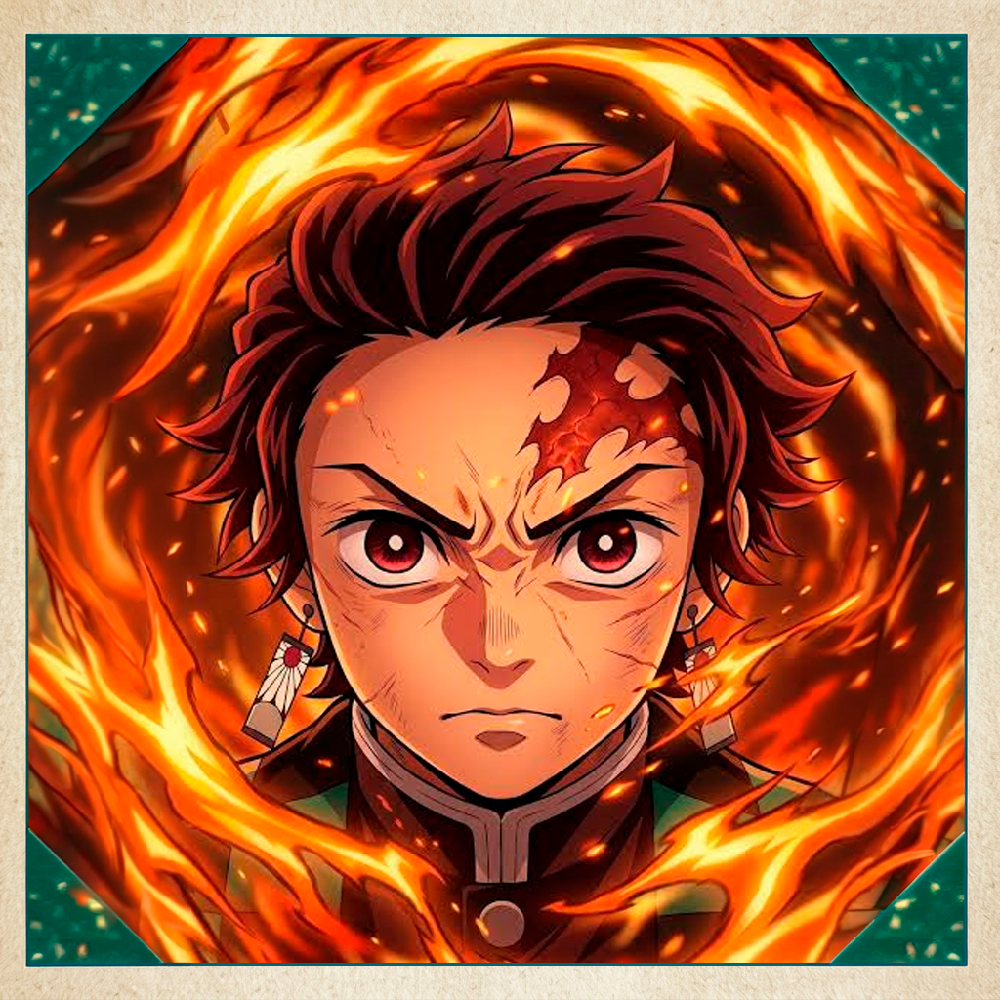
GuerreiroHonra. Quase sempre presente em todas as mesas de RPG, o arquétipo do Guerreiro transborda um desejo nobre por fazer o correto por vias corretas.
Não só apenas um bom samaritano, o Guerreiro é o cúmulo da coragem e do sacrifício. É difícil enganar o Guerreiro que, acima de tudo, possui um código de conduta, uma série de regras que o impedem de cair.
O Guerreiro pode não ter um grande plano ou objetivo à frente, mas é o caminho que escolhe trilhar que o torna uma figura carismática, confiável e seus inimigos apenas obstáculos a serem superados.
Inspiração:Tanjiro Kamado, de Demon Slayer. Extremamente compassivo, mas também determinado. Tanjiro enfrenta inimigos terríveis sem abandonar seus princípios e demonstra respeito até por aqueles que precisa combater.
Outros:
- Obi-Wan Kenobi (Star Wars);
- T'Challa, o Pantera Negra;
- Mulan, de Mulan;
- Link (The Legend of Zelda);
- Roronoa Zoro (One Piece).
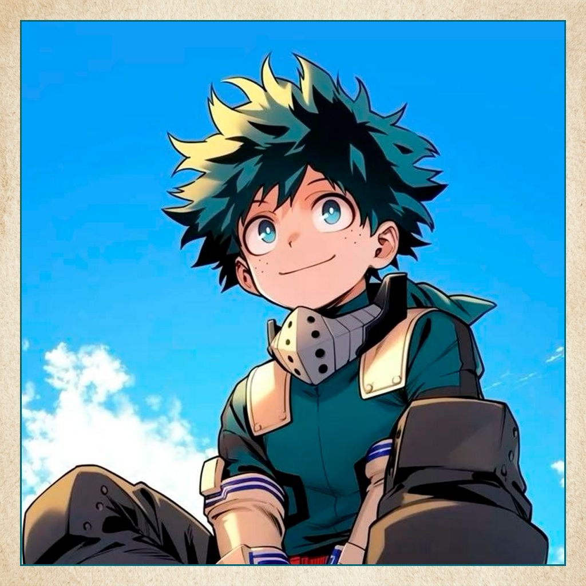
IdealistaO redentor, o pacifista, o esperançoso, o ingênuo, o sonhador ou o desacreditado e quebrado.
O Idealista acredita que as pessoas podem mudar e que sempre existe uma solução melhor do que violência, traição ou abandono. Para ele, ninguém está completamente perdido, mesmo aqueles que cometeram erros terríveis ainda podem encontrar um caminho de volta.
Sua esperança pode ser aquilo que mantém o grupo unido nos momentos mais difíceis. Quando todos estão prestes a desistir, é o Idealista quem lembra aos outros pelo que estão lutando. Porém, sua dificuldade em aceitar a crueldade do mundo pode fazer com que confie nas pessoas erradas, ignore sinais evidentes de perigo ou ofereça segundas chances a quem não pretende mudar.
O Idealista não é necessariamente alguém fraco ou incapaz de lutar. Ele pode enfrentar grandes perigos e até recorrer à violência quando não há outra saída, mas sempre carregará a dúvida de que talvez existisse um caminho diferente. Seu maior conflito surge quando seus ideais são colocados à prova: até onde está disposto a ir para preservar sua esperança?
Inspiração:Izuku Midoriya, de My Hero Academia. Acredita profundamente no ideal de herói e na possibilidade de salvar as pessoas, inclusive aquelas que se tornaram vilãs. Sua tendência a enxergar a pessoa por trás do inimigo pode colocá-lo em situações perigosas.
Outros:
- Luke Skywalker (Star Wars)
- Steven (Steven Universe);
- Dom Quixote de la Mancha;
- Naruto Uzumaki (Naruto);
- Hermione Granger (Harry Potter).
O Investigador precisa entender o que está acontecendo e não consegue simplesmente aceitar as coisas como elas parecem. Segredos, contradições e mistérios são praticamente um convite para que ele comece a fazer perguntas.
É observador e costuma perceber detalhes que passam despercebidos pelos demais. O problema é que sua curiosidade pode colocá-lo em situações perigosas, especialmente quando descobre algo que deveria permanecer escondido.
Ele observa, faz perguntas e conecta informações que os outros talvez nem percebam. Pode ser um detetive, estudioso, jornalista, investigador criminal, explorador ou simplesmente alguém que tem o péssimo hábito de querer saber demais. Sua principal característica não é necessariamente ser inteligente, mas possuir uma necessidade quase irresistível de descobrir a verdade.
Essa curiosidade também pode ser sua maior fraqueza. O Investigador nem sempre sabe quando parar. Um segredo pode ser perigoso, mas isso dificilmente será suficiente para fazê-lo desistir de descobri-lo. Sua desconfiança constante também pode fazer com que enxergue conspirações onde não existem ou coloque em dúvida pessoas que realmente estão tentando ajudá-lo.
Inspiração:Sherlock Holmes, o detetive mais famoso do mundo e talvez o exemplo mais óbvio. Observação, dedução e conexão de pistas são suas principais ferramentas. Sua curiosidade frequentemente o coloca diante de mistérios que ninguém mais percebeu.
Outros:
- Batman;
- Jessica Jones, da Marvel;
- Fox Mulder (Arquivo X);
- Velma Dinkley (Scooby-Doo);
- Hermione Granger (Harry Potter).
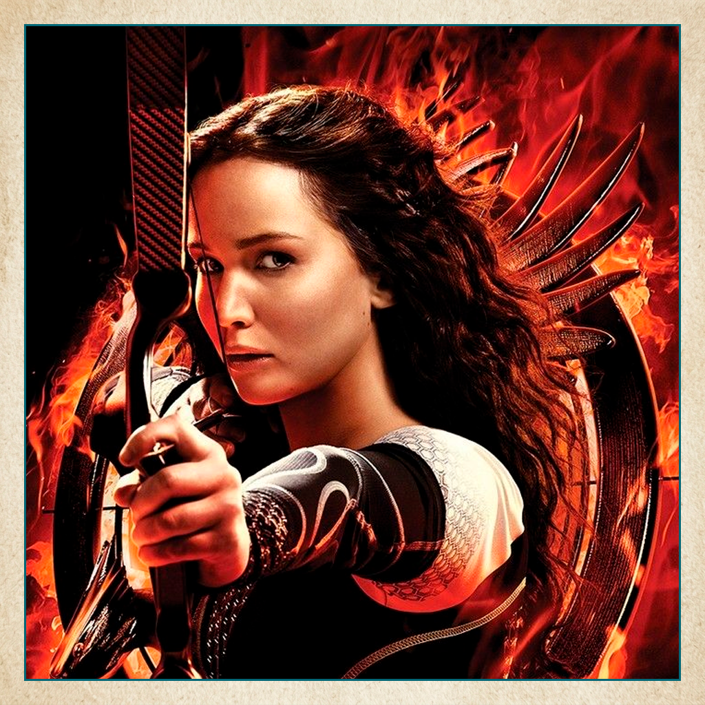
LíderO líder é o personagem que possui um objetivo único, foco e determinação.
Nada o deterá enquanto não tiver o que deseja na palma de sua mão. Sua resolução e força de vontade é um grande combustível para avançar a narrativa. Não é necessariamente uma pessoa que dá ordens ou comanda o grupo, mas certamente é o mais determinado a seguir em frente a todo custo.
Diferente do que entendemos por “líder”, esse personagem não é, necessariamente, a pessoa mais capaz ou poderosa do grupo. O que o torna um Líder é justamente uma ideia fixa em sua cabeça, um plano a ser executado.
Talvez mais de um jogador tente assumir o papel de Líder do grupo. Isso pode gerar algum conflito, principalmente se os líderes têm objetivos opostos. É aí que o Mestre deve agir, incusive durante a criação de personagens, para que todos estejam alinhados na mesma direção na narrativa, ou usando isso na sua história.
Inspiração:Katniss Everdeen, de Jogos Vorazes. Ela não começa como líder política ou militar, mas sua determinação em proteger a irmã e sobreviver acaba colocando-a no centro dos acontecimentos. Frequentemente age a partir de um objetivo pessoal bastante definido e inspira os outros.
Outros:
- Gandalf (O Senhor dos Anéis);
- Forrest Gump e eu não retiro o que disse;
- Comandante Shepard (Mass Effect);
- All Might (My Hero Academia);
- Harry Potter, ele mesmo.
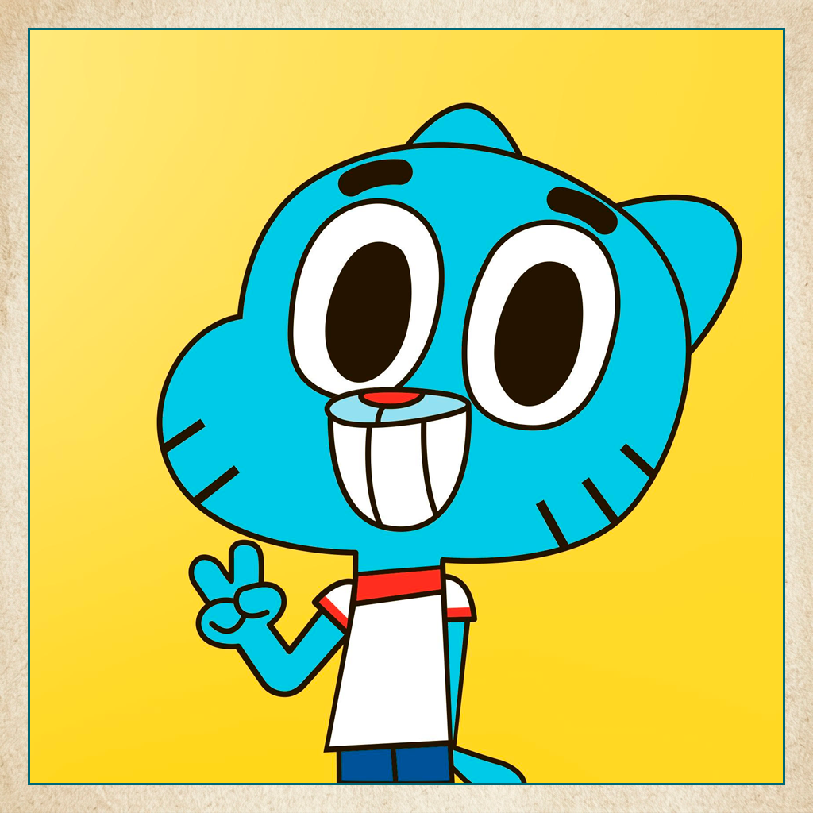
LoucoO Louco não enxerga o mundo da mesma maneira que as outras pessoas. Regras, expectativas e convenções parecem mais sugestões do que verdades absolutas. Enquanto os outros procuram o caminho mais seguro ou lógico, ele pode simplesmente fazer aquilo que ninguém teria coragem de tentar.
Sua imprevisibilidade pode ser uma grande vantagem. É difícil antecipar alguém que não segue padrões, e sua disposição para correr riscos pode abrir caminhos quando todas as opções convencionais parecem ter acabado. Muitas vezes, também possui uma maneira peculiar de enxergar as coisas, encontrando conexões e soluções que passariam despercebidas por pessoas mais convencionais.
Porém, sua liberdade pode facilmente se transformar em irresponsabilidade. O Louco pode subestimar perigos, agir sem pensar nas consequências ou transformar uma situação simples em um problema ainda maior. Nem sempre sabe quando está brincando com algo que deveria ser levado a sério e nem sempre os outros conseguem distinguir sua genialidade de pura imprudência.
Ele não precisa ser literalmente insano. Pode ser apenas alguém que se recusa a aceitar que existe uma única maneira "normal" de fazer as coisas. Desafiar as regras é uma forma de liberdade... mas quando é apenas uma desculpa para não assumir as consequências?
Inspiração:Gumball Watterson, de O Incrível Mundo de Gumball. Gumball constantemente transforma problemas simples em situações absurdas porque sua maneira de pensar não segue uma lógica convencional.
Outros:
- Willy Wonka (A Fantástica Fábrica de Chocolate);
- Coringa (Batman);
- Inosuke Hashibira (Demon Slayer);
- Monkey D. Luffy (One Piece);
- Jack Sparrow (Piratas do Caribe).
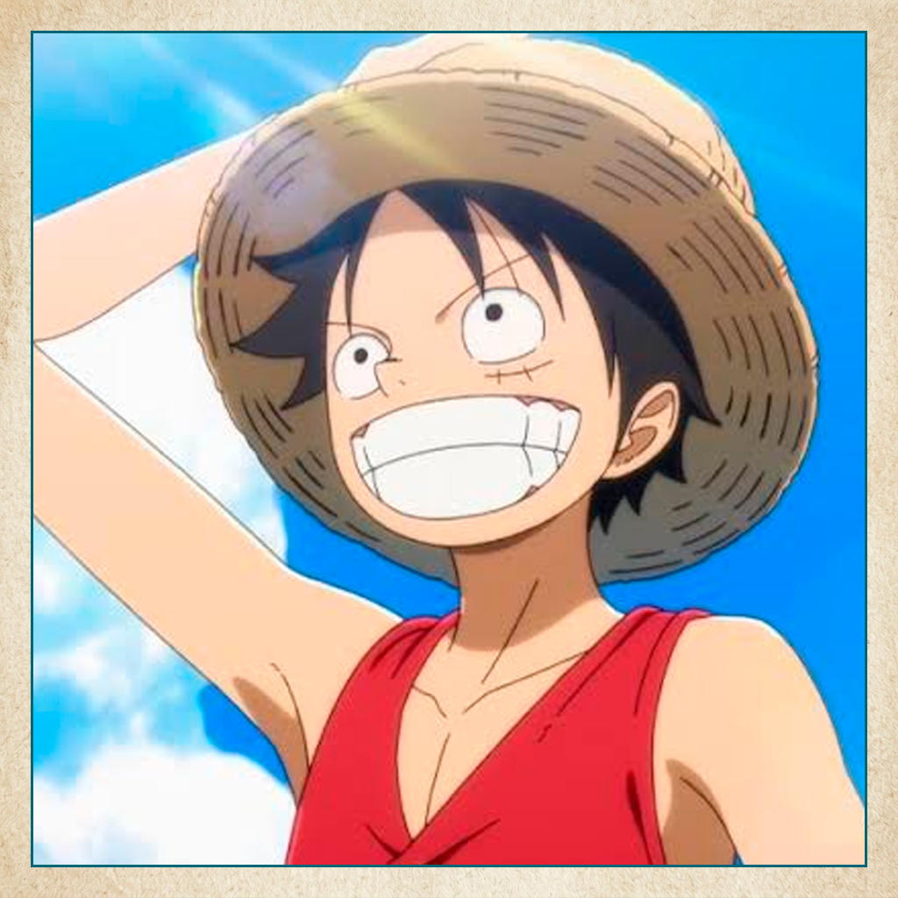
RebeldeO arquétipo do Rebelde é inconformado com as injustiças do sistema em que vive.
É aquele personagem que levanta bandeiras no meio da multidão e grita a plenos pulmões clamando por mudanças radicais.
Conhece as regras “das ruas”, sendo capaz de se virar com o que tem e praticamente não hesita na frente do perigo. Devido à segurança que tem de si mesmo, tende a ser irresponsável, muitas vezes se tornando incapaz de entrar de acordo com leis e regras em geral, exibindo comportamentos destrutivos para si e o grupo.
Age por impulso e, sempre que possível, questiona a ordem das coisas e o privilégio dos poderosos. Adora desafiar figuras de autoridade, como policiais e a nobreza.
Inspiração:Monkey D. Luffy, de One Piece. Luffy desafia constantemente autoridades, governos e estruturas de poder. Apesar de não ser necessariamente motivado por uma ideologia, sua recusa em aceitar que alguém possa determinar como os outros devem viver é uma característica muito forte do arquétipo.
Outros:
- Robin Hood;
- Jack Sparrow (Piratas do Caribe);
- Eleven (Stranger Things);
- Wandinha (A Família Addams \ Wandinha);
- Aloy (Horizon).
Conhecido pela sua beleza ou uso persuasivo das palavras, o Sedutor vira o centro das atenções. Dotado de um carisma irresistível, esse personagem conquista as pessoas para que realizem suas vontades.
Ele tende a ser manipulador com amigos e inimigos, tornando-se alguém difícil de confiar quando descobrem suas intenções. Por sempre conseguir o que deseja com facilidade, apresenta características de uma criança mimada, podendo ficar enraivecido ou perder a postura quando contrariado.
Tem um talento natural para encontrar atalhos, usando sua persuasão para convencer pessoas desatentas, e tende a se aproximar de quem for capaz de lhe proteger ou oferecer vantagens. Talvez possa ser comprado.
Inspiração:Cebolinha, da Turma da Mônica. Ele está constantemente tentando convencer Cascão e os outros a participarem de seus planos infalíveis, sendo muito criativo para inventar desculpas, planos e estratégias para conseguir o que quer. É autoconfiante, facilmente irritável e consegue que os outros façam aquilo que ele quer através de conversa, persuasão e manipulação.
Outros:
- Loki, o deus da trapaça da Marvel;
- Regina George (Meninas Malvadas);
- Aladdin;
- Loid Forger (Spy x Family);
- Hanz (Frozen).
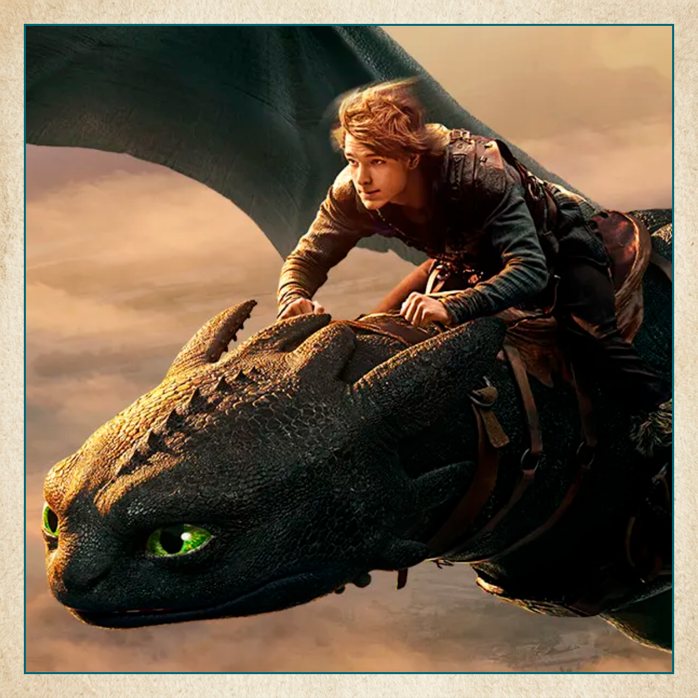
SobreviventeO Sobrevivente não acredita em planos perfeitos ou finais felizes. Aprendeu, muitas vezes da pior maneira, que o mundo é imprevisível e que boas intenções não garantem bons resultados. Quando tudo dá errado, não perde tempo procurando culpados: procura uma saída.
É adaptável, resistente, criativo e sabe encontrar soluções com poucos recursos. Consegue improvisar quando os planos falham, suportar situações adversas e continuar avançando mesmo quando as circunstâncias parecem desfavoráveis. Para ele, sobreviver não significa vencer, mas estar vivo para ter outra chance.
Pode ter dificuldade em confiar nos outros e tende a esperar o pior das pessoas. Promessas valem pouco quando comparadas a ações, e relacionamentos podem ser vistos como riscos ou responsabilidades. Quando pressionado, pode colocar a própria sobrevivência acima de princípios e ideais; alguns, até daqueles que ama.
O Sobrevivente não é necessariamente egoísta ou covarde. Muitas vezes, sua desconfiança nasceu de experiências que lhe ensinaram que confiar demais pode custar caro. Seu maior conflito surge quando precisa escolher entre aquilo que é necessário para sobreviver e aquilo que considera certo fazer.
Inspiração:Soluço, de Como Treinar o Seu Dragão. Ele funciona muito bem como uma versão mais leve desse arquétipo, especialmente se você quiser enfatizar a parte pragmática, adaptável e inventiva, em vez da desconfiança. Em vez de tentar competir nas mesmas condições que os outros, ele aprende a usar aquilo que tem a seu favor. Sua principal ferramenta é a criatividade.
Outros:
- Finn (Hora de Aventura);
- Logan, o Wolverine;
- Furiosa (Mad Max: Fury Road);
- John Marston (Red Dead Redemption);
- Joel Miller (The Last of Us).
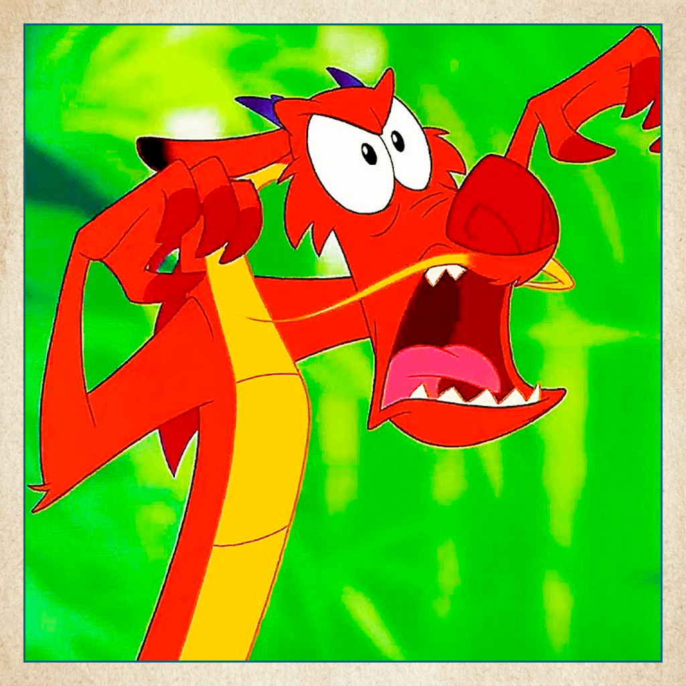
ToloSe seu personagem de RPG é aquela pessoa que, diante dos conflitos apresentados ao grupo, sem nenhuma preocupação no olhar, fala “relaxa, pessoal”, ele certamente se enquadra no arquétipo do Tolo.
O Tolo não se preocupa com nada em específico, nem com sua própria existência. Quase todo o propósito dele na mesa está em ser um alívio cômico. Nem por isso imagine que seu papel não é importante, pelo contrário, o humor pode e já salvou a vida de muita gente mergulhada em tempos difíceis.
Em compensação, ele pode ser brutalmente honesto, revelando informações e opiniões que geram conflito dentro e fora do grupo. Se tem alguém que pode fazer a coisa errada na hora errada, esse alguém é o Tolo.
Mas é bem comum a coisa errada na hora errada ser justamente o que o grupo precisava.
Inspiração:Mushu, de Mulan. Ele representa o arquétipo do Tolo por ser impulsivo, convencido e frequentemente agir sem pensar nas consequências. Mesmo diante do perigo, mantém seu humor e otimismo, transformando situações tensas em momentos cômicos. Suas trapalhadas podem complicar os planos, mas sua coragem e lealdade acabam sendo essenciais para ajudar Mulan.
Outros:
- Drax (Guardiões da Galáxia);
- Saitama (MOne-Punch Man);
- Might Guy (Naruto);
- Phil Dunphy (Modern Family);
- Fred e George Weasley (Harry Potter).
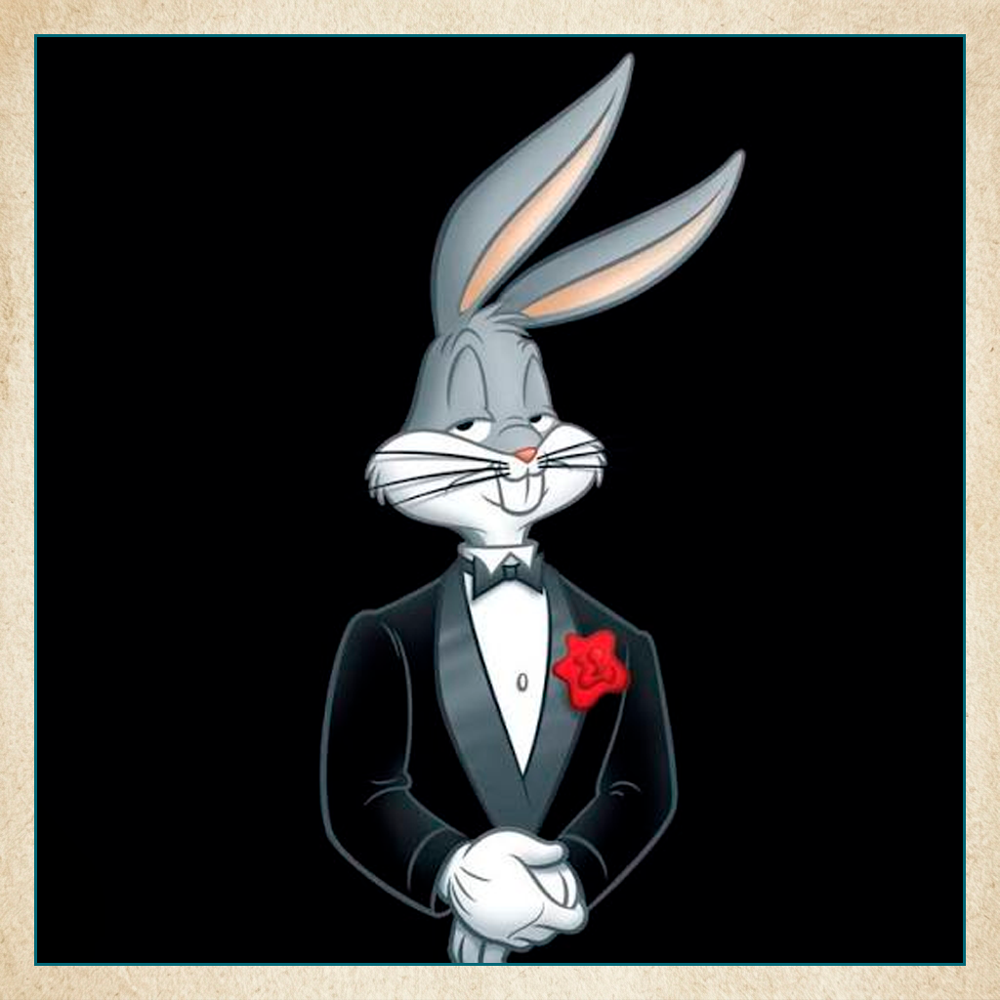
TrapaceiroO Trapaceiro é aquele que nunca encara um problema de frente quando pode encontrar uma maneira mais fácil (ou mais perigosa) de contorná-lo. Ele sobrevive usando inteligência, lábia, blefes e, quando necessário, algumas mentiras bem contadas.
Ele está sempre procurando uma brecha. Seja em uma regra, em uma negociação ou no comportamento de outra pessoa, ele consegue enxergar oportunidades onde os demais só veem obstáculos. Não precisa ser o personagem mais inteligente do grupo, mas certamente é aquele que pensa diferente e não tem medo de improvisar quando seu plano dá errado.
Sua principal força está na capacidade de enganar e influenciar os outros. Pode convencer um guarda de que possui uma autorização que nunca existiu, fazer dois inimigos brigarem entre si ou transformar uma situação perdida em uma oportunidade de vantagem. Para ele, quase tudo pode ser negociado e quase todo mundo tem um preço.
Porém, sua esperteza também pode ser sua maior fraqueza. O Trapaceiro tende a confiar demais na própria capacidade de manipular as situações e pode acabar acreditando que sempre conseguirá escapar das consequências. Sua dificuldade em ser sincero também pode gerar desconfiança, especialmente quando começam a questionar até onde vão suas verdadeiras intenções.
Se existe alguém capaz de dizer “deixa comigo” quando ninguém sabe como resolver um problema, esse alguém provavelmente é o Trapaceiro. O problema é que, quando ele diz isso, ninguém sabe se encontrou uma solução brilhante ou acabou de criar um problema ainda maior.
Inspiração:Pernalonga, dos Looney Tunes. Uma versão mais cômica desse arquétipo, ele raramente vence pela força; prefere provocar, enganar e conduzir seus adversários para situações em que eles mesmos acabam derrotados.
Outros:
- Pica-Pau;
- Han Solo (MStar Wars);
- Arsène Lupin;
- Peter Quill, o Star-Lord (Guardiões da Galáxia);
- Gato de Botas (Shrek).
O Vingador é o personagem que não conseguiu deixar o passado para trás. Alguém lhe tirou algo importante: uma pessoa, uma família, um lar, uma posição ou simplesmente a chance de ter uma vida diferente, e ele acredita que aquilo não pode ficar sem resposta.
Sua determinação nasce da dor. Enquanto outros tentam seguir em frente depois de uma derrota, o Vingador transforma a própria perda em combustível. Ele pode passar anos esperando pelo momento certo, reunindo informações, aprimorando suas habilidades ou procurando aqueles que considera responsáveis.
Nem sempre é sobre vingança, mas sobre justiça. Mas a linha é tênue e ele pode acreditar que está corrigindo uma injustiça enquanto, aos olhos dos outros, está apenas perpetuando um ciclo de violência. Assim, em resumo, ele pode ser um justiceiro também.
Apesar de sua determinação, o Vingador é emocionalmente vulnerável quando o assunto toca sua ferida. Pode tomar decisões irracionais quando confrontado com seu passado e ter dificuldade em abandonar uma oportunidade de vingança, mesmo quando isso coloca seus aliados em perigo.
Sua maior fraqueza é transformar a vingança em sua identidade. Depois de conseguir aquilo que tanto desejava, pode descobrir que não sabe mais quem é nem ter um objetivo ou motivação.
Esse arquétipo não precisa ser definido pela história de origem, ele pode aparecer principalmente através da personalidade e maneira de reagir aos conflitos.
Inspiração:Simba, de O Rei Leão. Depois da morte de Mufasa, Simba retorna para confrontar Scar. É um exemplo de Vingador que mistura vingança, justiça e recuperação do próprio lar.
Outros:
- O Justiceiro, da Marvel;
- Inigo Montoya (A Princesa Prometida);
- Max Rockatansky (Mad Max);
- Sasuke Uchiha (Naruto);
- Kratos (God of War).